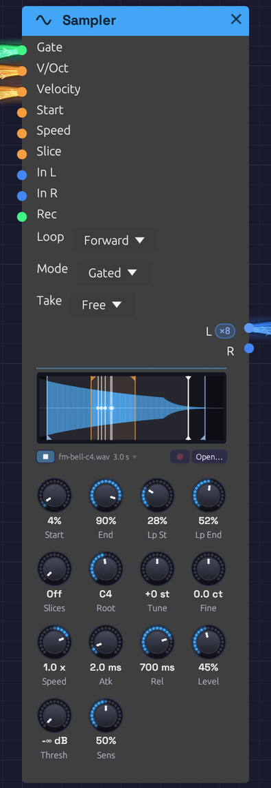
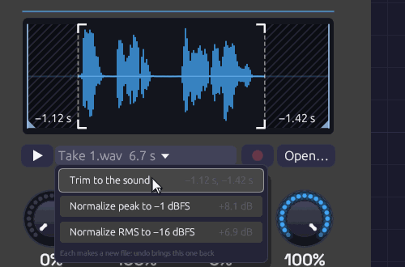
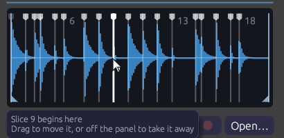

Sampler
Module ID source.sampler · Category Source

A five-note chord on a looped bell, and the file heard from ▶. The orange flags mark the loop and the blue ones what plays. Each white line with a dot is a voice, circling inside the loop at its own speed. The line capped at both ends is ▶'s, out in the bell's tail.Sampler plays a WAV file. Patch a gate in and it plays one-shots: a kick under a sequencer, a vocal chop, a door slam. Patch in V/Oct as well and a polyphonic gate, and it becomes an instrument: one recorded note spread across the keyboard, each key playing it at its own pitch.
Set Slices and it becomes a chopped break: the recording is cut into equal slices, or at each hit it finds, and each key plays one of them.
Every other sound in Soba is synthesized. The Sampler brings in sound you've recorded, or one Soba rendered itself, and keeps it with the patch. It can make the recording itself, too: patch something into In and press Rec (see Recording into it).
Loading a file
- Click Open… under the waveform, or click an empty Sampler's display, and choose a WAV.
- Drag a WAV from your file manager onto a Sampler to replace its file. Drop one on empty canvas and a new Sampler appears there, already playing it. The node lights up under the file while you drag, to show where it will land, and plays the file from Start to End with its waveform on the panel. That way you can audition files from the file manager before you choose one. It stops when the file leaves the node or you give up the drag, and a file dropped while it plays carries on. (In the browser a file can only be heard once it's dropped.)
- In the browser, drag a file onto the page the same way.
Loading a file is a step you can undo. A file is read and converted once. Samplers that play the same file share it.
Opening or dropping a file plays it once, from Start to End, so you hear what you chose. Undoing back to an earlier file doesn't.
Hearing it
You don't have to patch anything to hear what a Sampler holds.
- ▶, beside the file's name, plays it from Start to End and stops there. It plays at the Sampler's Tune and Fine, at a Speed of 1. Press it again (it shows ■ while playing) to stop.
- Alt-click the waveform to play from that point to End. Past End, it plays on to the end of the file. With Alt held, a dashed line follows the pointer to show where it will start. Dragging the markers works as before.
This works whether the transport is running or not. What you hear is the file itself, not the patch: it plays dry, beside the patch rather than through it, after the Audio Output's limiter, 6 dB below the file's own level. It isn't in a recording made with Record. It's how a sampler's or a DAW's file preview works.
One file plays at a time. Starting another, from this Sampler or any other, fades the first out over 5 ms. Deleting the Sampler or giving it another file stops it.
While it plays, a white playhead capped at both ends shows where it is, with the part it has played washed faintly behind it. The voices' playheads are lines with a blue dot, so the two never look alike.
Recording into it
Patch something into In L (and In R, for stereo) and press the red Rec button beside Open…. Press it again to stop. There's no file dialog: the take plays at once, and becomes the Sampler's file.
- Anything can be recorded. Patch an Audio Input to record yourself. Patch the patch's own sound, a Vocoder's output or a Mixer's send, to resample it into a new instrument. One side patched records the same on both.
- From a right-click. Right-click an Audio Input and choose Record into a new Sampler. A Sampler appears beside it, already patched, with Thresh at −40 dB and Rec already pressed, so the next thing you say is the take. Any other audio output offers Resample into a new Sampler: on its module's menu (with a submenu where there's more than one, like a Mixer's Out and Send), or on the output's own name. If the patch is stopped, it starts playing.
- Start on a sound. Turn Thresh up from −∞ dB and Rec waits until In is that loud before it starts, keeping the 30 ms before. The take starts on your first word, not on reaching for the mouse. While it waits, the panel dims and shows how loud In is against the threshold.
- Takes in bars. Set Take to a number of bars with a Clock running. Rec then starts on the next bar line and stops after exactly that many bars, so the take is already a loop. A press up to 50 ms after a bar line counts as on it.
- Stopping. Rec again, the Rec gate falling, the bars running out, or the room: a take lasts at most a minute. Stopping the transport ends a take there.
- The Rec jack takes over from the button, as Freeze does on the Vocoder: the Sampler records while the gate is high. A sequencer's gate resamples a phrase on cue.
- On a footswitch. Right-click Rec to learn a MIDI CC for it.
Live input reaches the patch a round trip after it was played, so the take is written that much earlier, as the Looper's overdubs are. A take in bars begins with what you played on the bar line, within a few milliseconds at the latency your device reports. The patch's own sound has no round trip, and is taken as it comes.
While a take comes in, the panel draws it in red, across a span that doubles whenever the take outgrows it, with the time so far in the corner and Rec showing ■. The Sampler goes on playing its old file until the take is done. Recording needs the patch playing.
Where takes go
When a take ends it's written as a WAV beside the patch, as <patch name> samples/Take 1.wav, Take 2.wav and so on, and the Sampler's file names it. That's a step you can undo: undo gives the Sampler back the file it had before. Saving the patch saves the take with it, and opening the patch plays it again.
A patch that hasn't been saved yet, a new one or an example, keeps its takes in a temporary folder until you save it. Save As then copies them beside the patch with its other samples. In the browser there's no folder beside the patch, so a take lives only in the tab, as a dropped file does. To keep one, click its name under the waveform and choose Download, which saves it as a WAV. A patch you download names each such file as though it sat beside it, and the status bar lists the ones to fetch. Download them into the same folder as the patch and it opens whole in Soba on the desktop.
Takes nobody keeps don't pile up. Saving removes the takes this session wrote that the patch no longer plays and undo can't bring back. Closing the patch (New, Open or Quit) removes those no saved patch names, the temporary folder among them. That covers the files Trim and Normalize write too. A file Soba didn't write is never touched.
Room for a take is set aside, a minute of stereo (about 23 MB at 48 kHz), when something is patched into In, so recording never has to find memory mid-take. Unpatch In and it's given back.
Trim and Normalize
A take comes in raw: silence at each end, whatever level the mic gave it, perhaps a bump before the first word. Click the file's name, under the waveform, for two fixes. They work on any file the Sampler plays, not only takes.
- Trim to the sound cuts the recording from where its sound begins to 300 ms after it ends.
- Normalize peak to −1 dBFS turns the whole recording up (or down) until its loudest sample is at −1 dBFS. Its shape is unchanged.
- Normalize RMS to −16 dBFS sets the level of the sound itself, so recordings sit at one level: a quiet take and a loud one come out alike. Up to 6 dB of peaks over −1 dBFS are taken down by a gentle look-ahead limiter. A peak louder than that, such as a popped "p", lowers the whole recording instead, and the status bar says by how much it fell short.

A spoken line with room at both ends, and Trim to the sound under the pointer. The hatched parts would go: 1.12 s from the start, up to the breath before the first word, and 1.42 s from the end. The crop marks frame what stays.Each item says what it would do before you choose it: how much each end loses, or how many dB the level moves. While the pointer is on an item, the waveform shows it too. A trim veils the parts it would cut and sets crop marks round what it keeps. A level writes its change across the panel, since the waveform is always drawn to fill it.
Neither touches the original. Each writes a new WAV beside the patch, in <patch name> samples, named for what was done (Take 1 trimmed.wav, then Take 1 trimmed normalized.wav), and the Sampler plays it once, as it does a file just opened. It's a step you can undo: undo brings back the untouched file. A trim moves Start, End and the loop's markers with the sound, so they mark the same moments in it. A marker in a part that was cut goes to that end. Sliced, the slices are cut from what's left.
Where the sound begins
The rule is the one the Soba Speaks example's voice was made with (tools/voice/record.py). The recording is measured in 10 ms steps, with any rumble under 70 Hz left out of the measurement. The room's level is that of its quietest tenth.
- The sound begins at the first sustained sound: one that lasts at least 80 ms, within 30 dB of the loudest and at least 10 dB over the room. A lone thump or lip smack is too short to count.
- From there the start walks back while the level keeps falling, to keep the breath before a word or a note's attack. It stops in the dip before anything earlier, such as a bumped stand, or where the level reaches the room, and never walks back more than 300 ms.
- The sound ends 300 ms after the last sustained sound, so a word can breathe out and a note ring.
A cut start fades in over 5 ms, and a cut end fades out over 80 ms. A recording with no quiet room to cut, a drone or a pad, has nothing to trim. Neither does one that's already been trimmed.
Inputs
| Port | Signal Type | Description |
|---|---|---|
| Gate | Gate (Green) | A rising edge starts a note. In Gated mode the falling edge lets it go. A polyphonic gate plays a voice per channel |
| V/Oct | Control (Orange) | Pitch, 1 V an octave. 0 V (C4) plays the Root note: the recording as it was made. Read all the time, so pitch bend and glide work. When sliced, it picks the slice instead, as each note starts |
| Velocity | Control (Orange) | Each note's level, 0 to 1, read as the note starts. Unpatched, every note is full |
| Start | Control (Orange) | Added to the Start knob as each note begins. 1 V is the whole recording, or the whole slice when sliced |
| Speed | Control (Orange) | Added to the Speed knob while the note plays, as on tape: pitch follows, and below zero it plays backwards |
| Slice | Control (Orange) | When sliced, picks a slice as each note begins: 0 to 1 across the slices, added to the note's own. Does nothing with Slices off |
| In L | Audio (Blue) | What Rec records. Patched alone, it records on both sides |
| In R | Audio (Blue) | The right side of what Rec records |
| Rec | Gate (Green) | Records while high, starting as it rises (or as Take and Thresh say) and stopping as it falls. Patched, it takes over from the Rec button |
Outputs
| Port | Signal Type | Description |
|---|---|---|
| L | Audio (Blue) | The left channel. A mono file plays the same on both outputs |
| R | Audio (Blue) | The right channel |
Both outputs carry a channel per voice when the gate is polyphonic.
Parameters
| Control | Range | Default | Description |
|---|---|---|---|
| Loop | Off, Forward, Ping-Pong | Off | Off plays once. Forward jumps from Loop End back to Loop Start. Ping-Pong plays back and forth between them |
| Mode | One-Shot, Gated | One-Shot | One-Shot plays to the end whatever the gate does. Gated lets go when the gate falls |
| Take | Free, 1 – 16 bars | Free | Free records until Rec is pressed again. In bars, with a Clock running, a take starts on the next bar and lasts exactly that long |
| Start | 0 – 100% | 0% | Where notes start, through the recording |
| End | 0 – 100% | 100% | Where notes end |
| Lp St (Loop Start) | 0 – 100% | 0% | Where the loop begins. Kept between Start and End |
| Lp End (Loop End) | 0 – 100% | 100% | Where the loop turns back. Kept between Start and End |
| Tune | ±24 st | 0 st | Transpose in semitones |
| Fine | ±100 cents | 0 | Fine tuning |
| Slices | Off, 2 – 64, Onsets | Off | Cuts Start–End into equal slices, or at Onsets, a marker where each hit begins. Each slice is played by its own key. See Slices |
| Root | C-1 – G9 | C4 | The note the recording was made at. Playing it plays the recording unchanged. When sliced, the key that plays slice 1 |
| Speed | −2 – 2× | 1× | Tape speed. 2 is twice as fast and an octave up, 0.5 half as fast and an octave down, and below 0 plays backwards |
| Atk (Attack) | 1 ms – 2 s | 2 ms | How long each note takes to fade in |
| Rel (Release) | 1 ms – 5 s | 10 ms | How long a note takes to fade out once let go |
| Level | 0 – 100% | 80% | Output level |
| Thresh (Rec Threshold) | −∞ – 0 dB | −∞ dB | At −∞ a take starts as soon as Rec is pressed. Turned up, it waits until In is this loud |
| Sens (Sensitivity) | 0 – 100% | 50% | Sliced by Onsets, how strong a hit must be to get a marker. See Slicing at the hits |
The four region knobs sit in the top row, under the waveform where their markers are. You can drag the markers instead of the knobs. Slices and Root start the second row, since together they say which key plays which slice. Thresh and Sens sit at the foot. Each says how loud something must be to count: In, to start a take, and a hit, to get a slice marker.
Playing it
One-shots
Patch a sequencer's Gate into Gate, and its Velocity into Velocity. Leave V/Oct unpatched and every hit plays at the recording's own pitch. One-Shot mode plays each hit to the end, however short the gate.
Across the keyboard
Patch Poly MIDI's Pitch, Gate and Velocity into V/Oct, Gate and Velocity, and set Root to the note the file was recorded at. Each key plays the recording faster or slower: an octave up is twice as fast and half as long, as on tape. Set Mode to Gated so that letting go of a key lets its note go, over Rel.
Pitch and speed
Pitch and speed are one thing here, as on a tape machine. Tune, Fine, Root, V/Oct and Speed all set how fast the recording is read, and so how high it sounds and how long it lasts. A recording made at a different sample rate from your audio device still plays at its own pitch.
At negative Speed a note plays backwards, starting at End and finishing at Start. A Speed that changes sign mid-note turns the note around where it is: an LFO into Speed scratches, and an envelope that falls to zero is a tape stop.
What plays
Start and End set the part of the recording a note plays. The rest of the waveform sinks into the background. A note fades out over its last 3 ms, so a recording cut mid-sound doesn't click at the end.
With Loop on, a note plays from Start to Lp End, then goes round. Forward jumps back to Lp St. Ping-Pong turns around and plays backwards to Lp St, then forwards again. A loop over whole cycles of a steady sound is seamless. Elsewhere, set the loop points where the waveform crosses zero, or use Ping-Pong, which never jumps.
In Gated mode a looping note keeps looping through its release, then fades. In One-Shot mode a looping note never ends. It plays until a new note takes its voice or the transport stops. That's a drone: a field recording slowed down an octave, looping forever.
Slices
Set Slices to cut the recording into equal parts, and each key plays one part: Root (C4 unless you move it) plays slice 1, C#4 slice 2, D4 slice 3, and so on up the keys. This is how samplers lay a chopped drum break or a set of vocal phrases across the keyboard.
- Each slice plays only itself. A note starts at its slice's start and stops at its end, with the same 3 ms fade as at End. In One-Shot mode a short gate still plays the whole slice. In Gated mode the note stops at the slice's end or when the gate falls, whichever comes first.
- The key picks the slice, not the pitch. V/Oct no longer transposes. Tune, Fine and Speed still do, and a slice played faster goes by sooner. Notes below Root, or past the last slice, play nothing.
- Slices divide Start–End. Move Start past a silence at the head of the file and the slices are cut from there.
- A loop goes round the slice. With Loop on, a held note in Gated mode repeats its slice until it's let go. That's a stutter. The Lp St and Lp End markers step aside while sliced.
- Backwards, at negative Speed, a slice plays from its end to its start.
- Start CV moves where a note starts inside its slice. 0.5 V starts halfway in.
Patch an Arranger lane, a Sample & Hold or an LFO into Slice to pick slices without a keyboard. Its value spreads evenly across them, 0 for the first and 1 for the last, and adds to whatever the note picked. With V/Oct unpatched, Slice alone chooses.
On the display, rules divide the waveform into its slices, numbered while they're wide enough to read. The slice a voice is playing glows. Hover a slice to see which key plays it. Sliced by Onsets, the rules are markers you can drag (see Slicing at the hits).
Slicing at the hits
Equal slices suit a file laid out in slots, a line or a note to each. A drum break or a spoken phrase isn't equal. Its hits and words land where they land, and a hit pushed a little early or dragged a little late is the feel that makes a break worth sampling. Equal sixteenths would cut through those hits.
Turn Slices past 64 to Onsets and the Sampler puts a marker where each hit begins: each drum, each syllable, each plucked note. Slice 1 runs from Start to the first marker, and each marker after that starts a slice of its own, up to End. As before, Root plays slice 1 and each key up plays the next.

Two bars of a swung break, sliced by Onsets at 50%: a marker at every kick, snare and hat, wherever the swing put it. The pointer is on the marker that starts slice 9.- Sens sets how many hits count. Turned down, only the loudest hits get a marker: the kick and the snare. Turned up, ghost notes, hi-hats and quieter syllables get one too. The markers move as you turn it.
- The markers are where the sound rises. The recording is split into four bands, from the bass up. A hit is a moment when several of them suddenly get louder together: a quiet hi-hat over a ringing kick still counts, in the top band. A marker goes a millisecond before its hit, so the slice keeps the whole attack.
- Drag a marker (the white tabs along the top) to move it. Drag it off the panel, up or down, to take it away, and double-click between markers to add one. Each change is a step you can undo.
- Markers you've moved are kept with the patch. Turning Sens finds them afresh, letting go of what you moved. Undo brings them back.
- A new file finds them afresh too, as does a new take. Trim to the sound moves them with the sound.
- Up to 64 slices. Markers outside Start–End cut nothing and are drawn faint. So are markers past the 63rd, and the last slice runs on to End.
The hits are found once, when the file loads. Turning Sens only chooses among them, so the markers move as soon as it turns. They're found on the file as it was recorded, so they're the same whatever your device's rate, and the render tool hears the same slices.
Voices
Sampler is polyphonic. Each channel of the Gate cable is a voice of its own, with its own pitch, velocity and place in the recording. Poly MIDI hands each new note the next voice. When all its voices are busy, it takes the oldest note's voice, which lets go of the old note over 5 ms as the new one starts. Retriggering a note that's still sounding does the same, so fast repeated notes never click.
Loading a new file while notes play fades them out over 5 ms. The next notes play the new file.
The display
The waveform shows the whole recording, scaled to fill the panel. What plays is lit blue, and the loop is washed orange. Start and End have blue flags at the foot, and the loop points orange flags at the head. Drag any of them like a knob. Hover a marker to see what it is, or the waveform to see the file's path, length and format.
Every voice draws a white playhead where it is in the recording, as bright as it is loud. A chord is several lines moving at their own speeds, and a released note fades where it stands.
Under the waveform are ▶ (see Hearing it), the file's name and length, which open Trim and Normalize, and Rec (see Recording into it), dim until something is patched into In and the patch is playing. A file that can't be found shows its name in orange. An empty Sampler asks for a file.
Files and patches
The Sampler plays WAV files: 8-, 16-, 24- or 32-bit integer, or 32-bit float. Mono files play on both sides. Files with more than two channels play their first two. Each file is resampled to your audio device's rate when it loads, and again if the device's rate changes.
A Sampler keeps up to five minutes of audio, about 115 MB of stereo at 48 kHz. A longer file is cut to its first five minutes, and the status bar says so.
A patch saves each Sampler's file as a path:
- Beside or below the patch, the path is relative:
samples/kick.wav. Move or zip the patch's folder and it still finds its samples. - Elsewhere, the path is absolute:
C:/Music/choir.wav.
Save As copies samples from outside the patch's folder into a folder beside it named <patch name> samples, and points the patch at the copies. The patch's folder then holds everything it needs to be shared. If the samples come to more than 50 MB, it asks first. Saving an example works the same way, so its samples come with the copy.
A patch whose sample is missing still opens. The Sampler keeps the path but plays nothing, and the status bar lists the missing file with the other load warnings. Open the file again to fix it.
In the patch file, the path is the module's file field. Slice markers you've moved are its slice_markers, with the Sens they were placed at, as fractions of the recording. Modules without either leave them out, so patches from before the Sampler read and save as they always did:
{
"id": 2,
"module_id": "source.sampler",
"position": [300.0, 74.0],
"parameters": [{ "name": "Mode", "type": "Select", "value": 1 }],
"file": "samples/fm-bell-c4.wav"
}
The render tool finds a patch's samples the same way, relative to the patch file.
Sound quality
Voices read between samples on a cubic (Hermite) curve. That's clean at ordinary speeds and pitches. Played more than an octave or so above its root, a bright recording begins to alias: its highest harmonics fold back as a faint metallic edge. Record the sample nearer the range you'll play it in, or filter it after the Sampler.
Patches
Sampled keys
The Sampled Keys example plays a bell across the keyboard: one strike of the FM Synthesis example, rendered by Soba and loaded into a Sampler.
A drum kit from recordings
[Trigger Sequencer Gate 1] ──> [Sampler (kick.wav) Gate]
[Trigger Sequencer Vel 1] ──> [Sampler (kick.wav) Velocity]
[Trigger Sequencer Gate 2] ──> [Sampler (snare.wav) Gate]
...
One Sampler per sound, each in One-Shot mode, into a Mixer to place them. Mix them with Drum voices for a kit that's part recorded and part synthesized.
A drone from anything
Load a long recording (rain, a room, a held note) and set Speed to 0.5, Loop to Ping-Pong with the loop over a steady stretch, Atk to 2 s and Mode to One-Shot. One gate starts a drone an octave down that never ends. Two Samplers on the same file, one at Speed 0.5 and one at 0.749 (a fifth above it), make a chord.
A chopped break
Load a one-bar drum loop and set Slices to 8 or 16, so each slice is an eighth or a sixteenth note. Or set it to Onsets, so each hit is a slice however it was played, and move any marker that landed somewhere you don't want it. Patch a Step Sequencer's Pitch into V/Oct and its Gate into Gate, clocked at the same division. Steps on C4, C#4, D4… play the break as recorded. Change a step's note and that step plays another hit. Patch a Sample & Hold of noise into Slice instead of V/Oct and the break rearranges itself on every hit.
Many lines in one file
The Clair de Satellite example keeps all eight of its sung lines in one file, a line to a slice. A Step Sequencer that steps every two bars sings line k on note C4 + k.
Scrubbing
Patch a slow LFO into Start, and a Clock into Gate. Each note starts a little further into the recording, so a spoken phrase or a melody comes out in stutters that wander through it.
Related modules
- Poly MIDI: plays the Sampler as an instrument, a voice per key
- Trigger Sequencer and Step Sequencer: one-shots in time
- Audio Input: outside sound live, as it happens. Patched into In, the Sampler records it
- Looper: records and layers live loops, where the Sampler records a take to play from a key or a gate
- Drum: synthesized drums to sit beside recorded ones
- Vocoder: a recorded voice that makes a chord speak, as in the Soba Speaks example